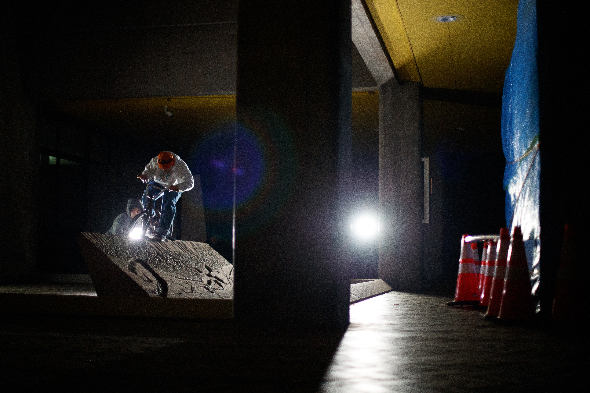

ABOUT

DARUMA STREET is a BMX street brand born from real street riding in Toyama, Japan.
DARUMA STREETは2016年、 老松 "OSOMATSU" 一瑛によって富山県でスタートした、 リアルストリートライディングを軸とするBMXブランドです。
ライディングだけでなく、映像制作、ツアー、プロダクト開発など、 ストリートカルチャーを形にする活動を続けています。
流行を追うのではなく、自分たちが本当に必要だと思えるものを生み出し、 そのすべてをストリートへ還元することを目的としています。